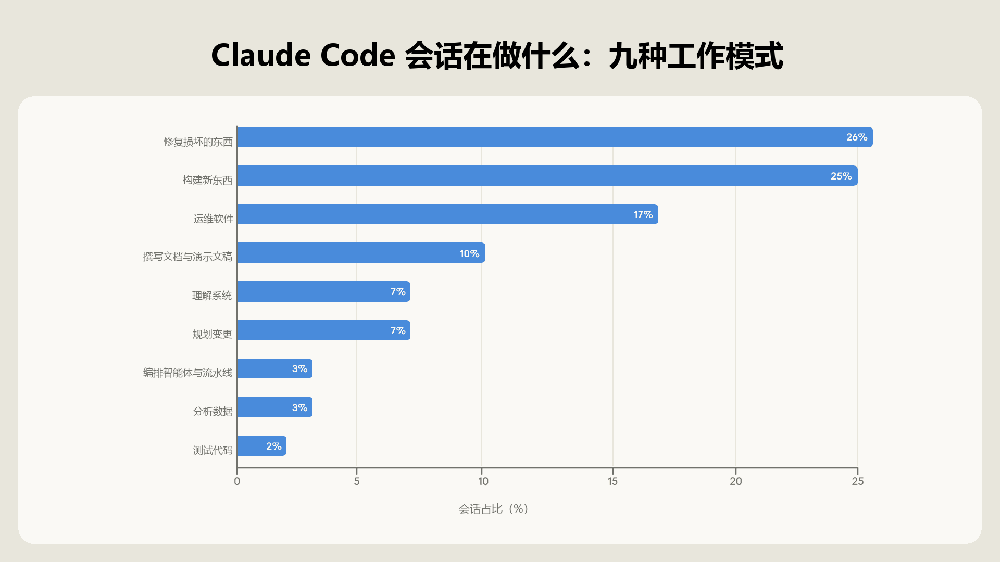
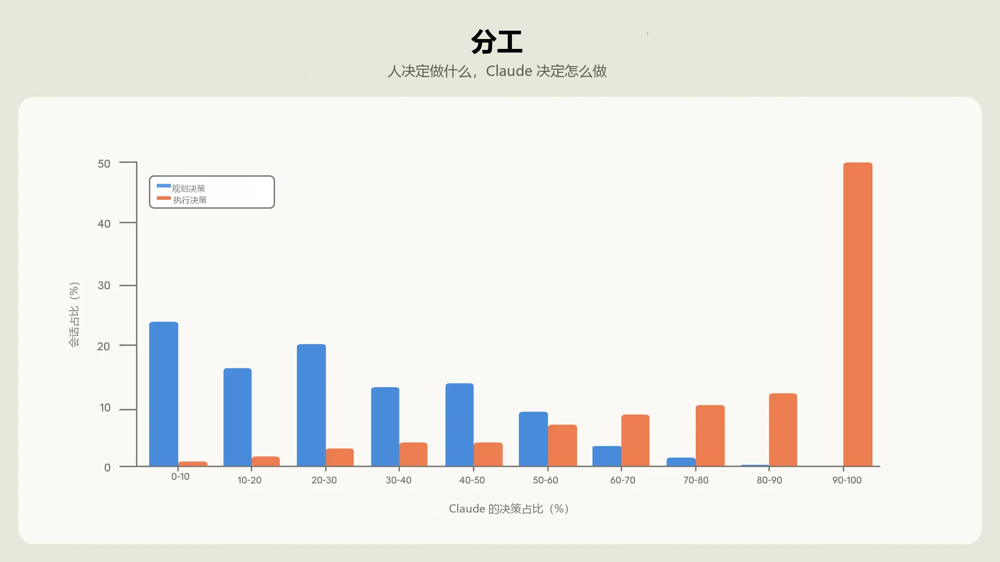
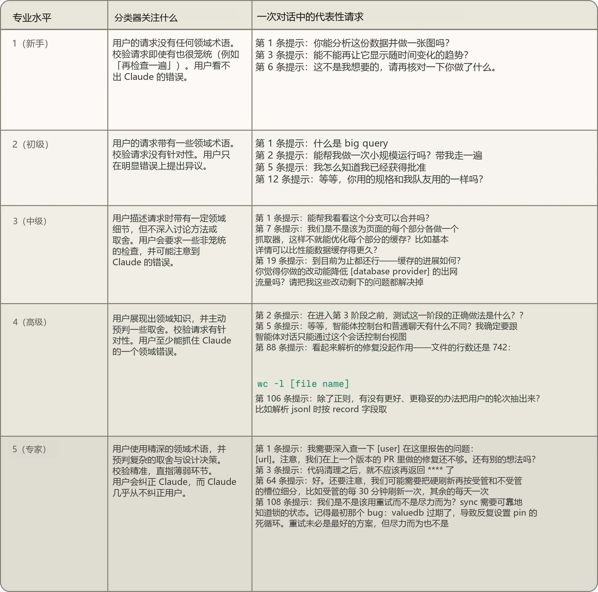
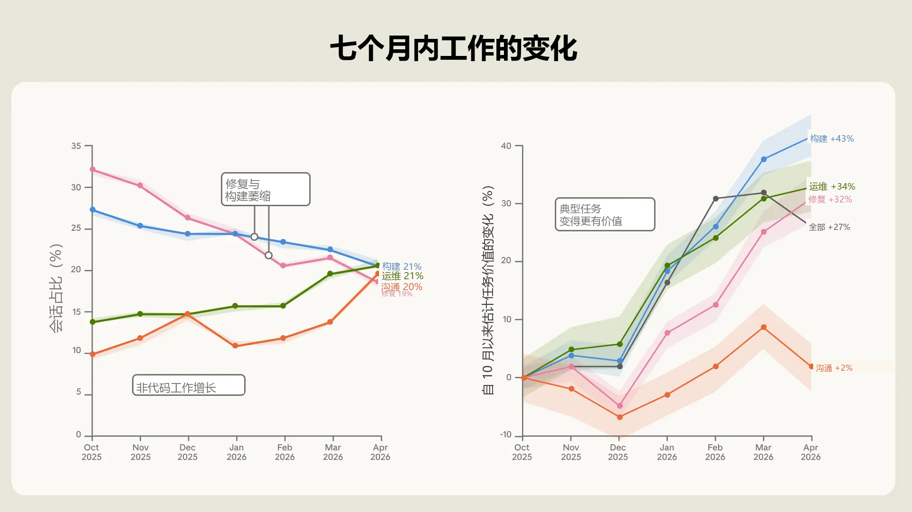
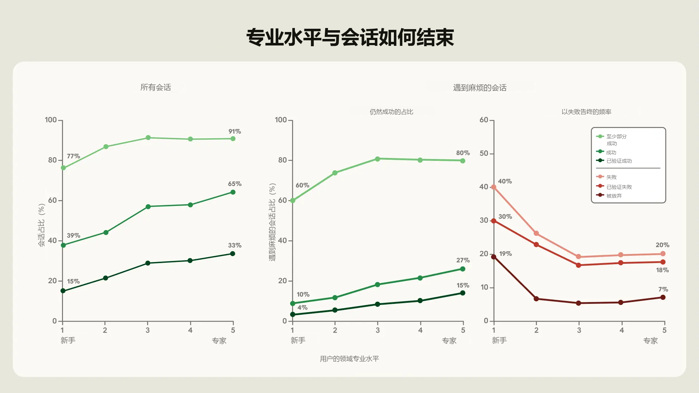

代理型编码与专业知识带来的持续回报
📖 中文摘要
专业术语注解
代理型编码：AI 代理按人类指示自主编写、修改并运行代码的开发方式隐私保护分析：确保研究者无法查看个别用户原始数据的分析方法决策归因：判定会话中规划与执行决策分别由谁做出的技术验证成功：同时满足人工判断与可验证证据（如测试通过）的成功专家度：根据指令精确度与纠错倾向评定的任务熟练程度分类器：自动标注会话模式与结果的机器学习模型📄 中文全文
- 类别： 经济研究
- 来源： https://www.anthropic.com/research/claude-code-expertise
经济研究
2026 年 6 月 16 日
阅读 PDF

主要发现
- 在先前工作的基础上，我们引入了一个研究交互式智能体编程的框架，它基于对 2025 年 10 月至 2026 年 4 月间约 40 万个 Claude Code 会话的隐私保护分析。我们评估了任务构成、人机协作和成功率。
- 在典型会话中，人做出大部分规划决策（做什么），而 Claude 做出大部分执行决策（怎么做）。一个人带入会话的领域专业知识越多，Claude 每条指令完成的工作就越多。在编码任务上，每个主要职业的成功率——以通过测试或提交的工作等可验证证据来完成其人设想的任务——平均都与软件工程师几乎持平。
- 一个人拥有的领域专业知识越多，会话以成功告终的频率就越高——尽管中级用户与专家用户之间的差距不大。在我们观察的七个月里，用于调试的会话占比下降了近一半，使用转向了更多端到端的智能体式用途：部署和运行代码、分析数据以及撰写非代码文档。
- 在这七个月里，典型任务的价值（我们通过与自由职业招聘信息的比较来估算）在几乎每一种工作中都有所上升——平均约上升 25%。
引言
智能体编程已经起飞。自 2025 年底以来，有编码智能体活动的 GitHub 项目占比已翻了一倍多，¹ 而 Claude Code 用户现在平均每周花 20 小时使用该工具。² 没有正式编码经验的人能否成功引导智能体完成复杂的技术工作？这些工具的快速普及和改进对广泛的知识工作意味着什么？虽然我们尚未完全回答这些问题，但我们从 Claude Code 的使用数据中寻找早期信号。 本报告基于对 2025 年 10 月至 2026 年 4 月间约 23.5 万人约 40 万个交互式会话的隐私保护分析，提供关于 Claude Code 在实践中如何被使用的证据。它建立在先前聚焦于 Claude Code 会话中自主性度量以及Claude Code 如何改变 Anthropic 的工作方式的研究基础之上。³ 在这里，我们引入一个描述交互式 AI 编码助手使用情况的框架：正在做什么样的工作、谁在做、是否成功。我们聚焦于通过命令行界面（CLI）、Claude.ai或 Claude Code 桌面应用进行的 Claude Code 使用。⁴ 通过追踪智能体编程使用如何随模型能力提升而变化，我们可以更好地理解这些工具如何影响编码专业人员与知识工作者的劳动力市场。 Claude Code 上发生的事情，可能是知识工作未来走向的预览——随着智能体嵌入非编码工作。我们发现 Claude 正在处理更复杂、更有价值的任务。与此同时，智能体编程中仍然存在明确的分工：人决定构建什么，智能体决定如何构建。 我们还看到证据表明，放大工具有效使用效果的是领域专业知识，而非编码熟练度。具体来说，领域专家成功得更频繁，也更容易从错误和误解中恢复。然而，专家与中级用户之间的差距不大——这表明在一个领域达到熟练水平，就足以几乎像那些拥有精深造诣的人一样有效地使用该工具。 这些发现让我们对劳动力市场可能的转变有了早期解读。在我们的数据中，成功取决于一个人对其试图解决问题的理解程度，而非他们是否受过编码训练。如果这些模式在整个经济中成立，那就表明：虽然智能体编程工具可能在吸收一些实现密集型工作，但它们也在回报那些对工作中要解决的问题有扎实理解的人。编码智能体并没有取代领域专业知识——工人带给智能体的理解越多，智能体能够完成的高质量工作就越多。
分工
人们用 Claude Code 做什么
为了理解人们用 Claude Code 做什么，我们将每个会话归类为九种工作模式之一——即最能描述该会话试图达成目标的单一活动。⁵ 四种模式直接涉及编写或维护代码：构建_新东西、_修复_损坏的东西、_测试_代码，以及_编排_其他智能体或自动化流水线。另一个类别是_运维_软件——部署、配置、运行流水线、监控系统。还有两类更多是弄清楚要做什么：_理解_现有系统如何工作，以及在动手之前_规划_变更。还有两类采取的行动与代码无关，或代码对最终产品只是附带性的：_分析_数据和通过演示文稿及其他散文式文档_沟通。 约 56% 的会话由编写（25%）、修复（26%）或测试与编排代码（5%）构成。软件运维占 17%，14% 的会话是规划或探索，13% 产生分析或散文式产出（图 1）。

图 1：九种工作模式每个交互式会话被归类为最能描述其试图达成目标的单一模式。
我们通过让一个模型读取每个会话的转录本进行分类，然后使用我们的隐私保护分析工具，将会话与每次会话自动记录的遥测数据（包括是否有任何代码行被添加或删除）进行核对。两个来源具有高度一致性——例如，被我们的分类器标记为创建或修改代码的会话中，超过 90% 在遥测数据中显示了代码变更。详见附录。
谁决定什么
Claude Code 有多自主？能力评估表明上限很高且在不断上升：在 METR 的时间跨度评估等基准上，前沿模型现在可以完成需要人类数小时的软件任务，并自主克服途中的障碍。但实际使用情况究竟如何？在这里，我们考察真实会话中人和 Claude 各自做了多少引导。 我们从两个角度研究这个问题。首先，我们关注人们在多大程度上把_决策_托付给 Claude；其次，我们考察他们交给 Claude 多少_行动_。为了理解会话中的决策分工，我们构建了一个基于会话内容的隐私保护决策归属分类器。我们让分类器列出会话中所有有意义的决策。我们将这些决策分为规划（做什么、采取哪种方法、什么算完成）和执行（改哪些文件、写什么代码、用什么语言写、运行哪些命令）。然后分类器将每个决策归属给 Claude 或用户，从而给每个会话两个数字：用户的规划决策占比和用户的执行决策占比。 平均而言，人们做出约 70% 的规划决策，但只做出约 20% 的执行决策（图 2）。在实践中，智能体编程存在明确的分工——人决定构建什么，智能体决定如何构建。 为了理解会话中行动的委托情况，我们考察会话的结构而非内容。一个 Claude Code 会话涉及 Claude 与用户来回交换提示词（来自用户）和行动（由 Claude 执行）——用户写一条提示词，Claude 去执行一些工作，然后用户再写一条提示词，如此反复。在典型会话中，大约有四轮这样的交流。在我们 10 月到 4 月的历史数据中，用户发送的每条提示词平均会触发 Claude 执行约 10 个行动——有时超过 100 个。⁶ 在每一轮中，Claude 读取文件、编辑代码、运行命令，平均写出 2,400 字的输出。 Claude 在两次检查点之间做多少工作，很大程度上取决于谁在做决策。当用户保持对执行的控制（即做出超过 80% 的执行决策）时，Claude 每轮采取的行动较少（约 8 个行动）。而当 Claude 接管规划（即做出超过 80% 的规划决策）时，它承担的行动最多（约 16 个）。

图 2：Claude 在规划和执行决策中的占比各会话中，归属给 Claude 而非用户的规划决策（做什么）和执行决策（怎么做）占比的分布。在典型会话中，用户做出约 70% 的规划决策，而 Claude 做出约 80% 的执行决策。
专业水平
Claude 根据每份转录本，以从新手到专家的五分制来评定用户在任务上的表观专业水平。专业水平分类器寻找三个信号：用户如何精确地表述其指令、他们让 Claude 验证什么，以及是用户倾向于纠正 Claude 还是 Claude 倾向于纠正用户。请注意，专业水平捕捉的东西与职位或一般能力截然不同，而且关键是，它是_针对具体任务_的。一位资深工程师问第一个 Rust 问题是 Rust 的新手。一位从未用过 Python 的会计师，如果能准确告诉 Claude 一个 Python 脚本必须执行哪些对账规则，并抓住它在月末结账时处理错的边缘情况，那么她就是该任务的专家。 下表显示了我们如何在分类器中定义每个专业水平，以及来自编码智能体会话公开数据集 SWE-chat 的示例请求。被归类为新手的对话给出泛泛的指令，不暗示任何领域特定知识。专家级对话则传达出对代码库和技术环境的深刻理解。

表 1：专业水平分类器示例是对我们分类器标记的真实会话的转述、匿名化和浓缩。表中使用的许多会话来自编码智能体会话的公开数据集 SWE-chat。
我们量化了专业水平与 Claude 每条提示词的输出和活动之间的关系。在典型的新手会话中，每条提示词触发约 5 个 Claude 行动和约 600 字输出，而专家会话触发的行动链长度是前者的两倍多（12 个行动），携带五倍的输出（3,200 字）（图 3）。新手与专家会话之间的这种差距出现在每一种工作和每一个任务价值区间内。
这些度量补充了我们在上一份关于 Claude Code 的报告中的自主性度量——后者追踪智能体运行了多久、人们多频繁自动批准其行动。相比之下，我们的决策归属度量捕捉的是在整个会话中谁做出了实质性决策，而我们的每条提示词输出和行动度量则衡量每个人类提示词触发了 Claude 多少自主活动。
 图 3：对更有经验的用户，Claude 每条提示词做得更多
图 3：对更有经验的用户，Claude 每条提示词做得更多
对于更有经验的用户，Claude 每条提示词产生更多行动（左柱）和更多文本输出（右柱）。箱体跨越四分位距（以中位数分割）。须线表示第 5 至第 95 百分位。白点表示几何均值。两个上升趋势均具有统计显著性（p < 0.001），每个相邻级别之间的台阶也同样显著，并且在控制工作模式、任务价值、月份、职业和模型系列的回归中（每个专业水平 +9% 行动和 +13% 输出）仍然显著，标准误按用户聚类。
谁在使用 Claude Code，用于什么
用户
为了理解是谁在做这些工作，我们从会话转录本推断每个用户的职业，将其映射到劳工统计局标准职业分类（SOC）体系中的 23 个主要组之一。分类器被指示只依赖以下信号：智能体会话开始时加载的项目上下文、用户文件的名称和结构、他们引用的任何产物（如法律文件、临床数据、财务报告、课程大纲等）以及他们使用的词汇。⁷ 它被明确指示_不要_把编码行为本身当作编码职业的证据。只有当有明确信号表明软件或数据工作是用户的职业时，会话才被归类为编码 SOC 代码（计算机和数学职业）。一个律师构建脚本来自动标记合同文件夹中缺失条款的会话，会被映射到法律职业，即使该会话的工作主要是软件。当没有任何关于用户职业的信号时，会话保持未分类。 我们能够在约 70% 的会话中推断出职业。在这部分中，涵盖大多数软件相关工作类别的计算机和数学职业毫不意外是最大的群体。其次是商业和金融运营；艺术、设计、媒体；管理；以及生命、物理和社会科学。我们样本中增长最快的非软件职业群体是管理、销售和法律职业。
工作
2025 年 10 月至 2026 年 4 月间，用 Claude Code 完成的工作构成发生了实质性变化。最明显的变化是，用于修复损坏代码的会话占比从 33% 下降到 19%（图 4）。取而代之的是，我们看到围绕代码的工作占比增加。软件运维从会话的 14% 增长到 21%。编写和数据分析大约翻倍，从约 10% 增长到会话的约 20%。 任务本身也变得更加有价值。我们通过询问这项工作在自由职业市场上的报价来近似每次会话的经济价值，并以真实招聘信息的公开数据集进行校准。按此衡量，平均会话的估计价值在 10 月到 4 月间上升了 27%。这一上升在多种工作中都成立。构建、运维和修复类任务的价值都增长了约三分之一或更多（分别约 43%、34% 和 32%）。这些价格估计是粗略的，因此我们主要用它们来比较任务之间的相对价值，而不是按字面解读为美元金额。⁸ 关于任务估计器的构建细节，见附录。

图 4：Claude Code 工作的构成与价值，2025 年 10 月至 2026 年 4 月七个月窗口内各工作模式中的会话占比。修复损坏代码的会话占比从 33% 降至 19%，而软件运维、数据分析和文档撰写有所增长。
成功取决于用户带来了什么
任务的估计价值是了解 Claude Code 如何帮助人们完成工作的一种方式。另一个角度是看有多少会话是成功的，以及会话的哪些特征与成功相关。在我们所有的成功度量中，我们都看到一个清晰的模式：一个人在会话中表现出的专业水平越高，成功的可能性就越大。大部分增益集中在专业水平量表的下端——新手会话与中级会话之间的差距大于中级与专家之间的差距。 在转向成功会话的特征之前，我们应该明确我们如何衡量成功。我们无法观察到用户的真实世界结果，也无法直接问他们是否从 Claude 那里得到了想要的东西。相反，我们依赖两个互补的基于转录本的度量。第一个是_判定成功_，来自一个读取完整转录本并判定该人是否成功完成了其设想目标的分类器（选项：成功、部分成功、失败、无明确目标）。两个配套分类器随后对支持该判定的证据强度进行评级，以确定_已验证成功_。一个成功信号分类器寻找成功的可验证证据。具体来说，它寻找与工作匹配的 git 活动，如提交和拉取请求，以及测试套件通过和用户的明确肯定。它将会话从「无信号」到「弱信号」（1）再到「多个硬信号」（5）进行评分。一个平行的失败信号对事情出错的证据进行评分——错误、失败的测试、重试、用户对输出提出异议。已验证成功要求_同时满足_会话被判定为成功，并且至少有一个硬性的可验证成功信号。对于下面聚焦于会话成功或失败程度的分析，我们排除了被分类为「无明确目标」的会话，它们约占我们完整样本的 7.7%。
专业知识的回报
那么什么样的会话最成功？事实证明，上文描述的会话专业水平评级对会话的成功至关重要。
人们可能会担心专业水平并不是真正的驱动因素——也许专家只是选择不同的任务，或在其他方面有差异。在本节中，我们通过比较做同类工作、估计价值相同、月份相同、主题相同、来自同一大致职业群体的会话，来部分解决这一担忧，并询问结果如何随该人的评定专业水平而变化。
 表 2：从分类器导出的成功与失败定义
表 2：从分类器导出的成功与失败定义
示例转述并概括了来自智能体编码交互公开数据集 SWE-chat 的真实会话，并由我们的分类器标记。
在我们所有的成功度量中，一个人在会话中表现出的专业水平越高，会话成功的可能性越大。被评定为新手的会话，达到我们最严格的度量_已验证成功_的比例为 15%，至少部分成功的比例为 77%。被评定为中级或以上的会话，达到已验证成功的比例为 28–33%，部分成功的比例为 91–92%（图 5）。
在每项度量中，大部分增益来自从新手到中级；从中级到专家之间，斜率减小。在附录中，我们给出了图 5 背后回归的细节。

图 5：专业水平与会话如何结束按用户在任务上的评定专业水平（从新手到专家的五分制）划分的会话结果。左面板包含所有会话。中间和右面板限于遇到麻烦（失败信号 > 3）的会话，并显示仍然以各种成功和失败定义告终的占比。每个点都是一个调整后的比率——我们通过只比较具有相同工作模式、相同任务价值区间、相同月份、相同任务主题和相同用户类型（软件相关职业或否）的会话，来估计专业水平之间的差异。这些点背后回归的细节在附录中。须线是样本均值的置信区间（大多数太小，在此图中不可见）。这些图排除了被成功结果分类器判定为无明确目标的会话。
在遇到挑战的会话中也出现了类似的梯度。当失败信号记录到已验证的失败证据时，我们说会话_遇到麻烦_。这可能是一个错误、一次失败的测试、多次尝试做同一件事，或用户表达沮丧或不满。在遇到麻烦的会话中，已验证成功的占比从新手评定会话的 4% 上升到专家评定会话的 15%，并考虑了上述所有控制变量（图 5）。从更宽松的度量来看，我们发现至少部分成功的占比对于新手为 60%，对于中级到专家会话为 80–81%。 我们还追踪反向关系——专业水平与各种失败度量。请注意，在此分析中，被判定为失败的会话是那些甚至没有部分成功的会话。我们说一个遇到麻烦的会话如果被判定为失败_且_写入了零行代码，就是_被放弃_的：用户看似新手的会话有 19% 以放弃告终，而其他所有人的比例为 5–7%。换言之，经验最少的用户在难以得到想要的结果时更可能放弃。专业知识的部分价值似乎在于能够把智能体引向正确的方向。⁹
**
职业可能不如专业水平重要** 软件相关职业的人在约 30% 的会话中总体上达到已验证成功，而其他职业的用户约 26% 的时间达到已验证成功。在产生代码的会话（即添加或修改至少一行代码的会话）中，这两个数字分别为 34% 和 29%（图 6）。在更宽松的成功定义下，软件相关职业与其他职业之间的差距缩小——两个群体在产生代码的会话中分别有 89% 和 88% 的时间达到至少部分成功。那五点的差距很小，而且在七个月里既没有扩大也没有缩小，尽管两个群体的成功率都在提高。在产生代码的会话中，我们数据集中十大职业中的每一个，其成功率都落在软件工程师的七个百分点以内。管理职业在已验证成功上最高，略高于软件工程职业。其较高的已验证成功率可能反映了可迁移到指挥智能体的管理技能。但也可能部分反映我们的度量方式：验证部分依赖于转录本中的明确确认，而管理者在得到所要求的东西时可能更倾向于明确沟通。¹⁰
 图 6：按推断职业划分的编码会话中已验证成功和判定成功率
图 6：按推断职业划分的编码会话中已验证成功和判定成功率
在添加或更改至少一行代码的会话中，按用户推断的职业群体划分，达到严格成功定义（判定成功和已验证成功）的会话占比，针对最大的十个群体。每个群体都在软件/数学用户（SOC 代码：计算机和数学职业）的七个百分点以内。误差条是按不同账户计算的 95% 置信区间。
展望
本报告的结果描绘了一幅新兴图景：智能体编程如何放大某些形式的知识和技能，同时替代其他形式。在产生代码的会话中，每个主要职业的成功率都落在软件相关职业的几点以内。看来编码智能体正在使编码背景对成功编程变得不那么重要。 与此同时，成功的会话更可能展现领域专业知识。被评定为专家的会话达到已验证成功的频率是新手的两倍多，而当会话遇到麻烦时，新手放弃会话的比率是其他人的数倍。协作的形态为这幅图景增添了更多色彩——领域专家能够引导 Claude 用每条指令做更多工作。因此，引导 Claude 走向成功的能力更多来自对领域的掌握，而非编写代码的能力。拥有这种掌握的人——无论在哪一领域——现在或许能够完成他们以前无法完成的技术工作。没有任何这类专业知识的人，从同样的工具中获得的收益要少得多。而且增益主要来自胜任而非精通——对领域有可用的掌握就能获得大部分收益，而深度专业化只在其上再添一点点。 这些发现是初步的。与我们的多数研究一样，我们无法衡量真实世界的结果，例如会话中编写的代码事后是否真正被使用或弃用，或者它是否产生了有经济价值的产物。此外，本报告排除的非交互式使用占活动的重要份额。开发一个衡量它的框架是未来工作的优先事项。我们所有对会话的分类都依赖模型对转录本的阅读。在附录中，我们展示分类器在预期方向上与独立遥测数据一致，并在大多数会话上与一个强参考模型一致。但分类器在大规模上的验证仍然具有挑战性，而 Claude Code 会话又增加了难度，因为它们可能过长、过于复杂，人类标注难以作为基准真值。 本报告中的图景将随着模型、用户以及它们之间分工的变化而更新。我们希望这些度量能让我们在重大转变发生时追踪它们。例如，如果专业知识的回报开始随时间下降，那将表明模型开始提供用户目前带来的基本判断，而这些工具的收益正扩大到领域专家之外。如果软件职业之外的用户成功完成的编码会话占比继续增长，那可能表明软件生产正成为各领域普通工作的一部分，而非单一职业的产物。这些转变将改变谁从智能体编程中受益、受益多少，并将对劳动力市场中最受珍视的东西产生影响。
附录
可在此处获取。
引用
@online{hitzig2026agentic,
author = {Zoe Hitzig and Maxim Massenkoff and Eva Lyubich and Shaoyi Zhang and Ryan Heller and Peter McCrory},
title = {Agentic coding and persistent returns to expertise},
date = {2026-06-16},
year = {2026},
url = {https://www.anthropic.com/research/claude-code-expertise},
}
致谢
致谢：Jake Eaton、Sarah Pollack、Hanah Ho、Szymon Sacher、Anton Korinek、Santi Ruiz、Kerry Persen、Ankur Rathi、Alex Tamkin、Heather Whitney、Cat Wu、Kacie Jenkins、Jennifer Martinez、Amie Rotherham、Boris Cherny、Eleanor Dorfman、Miles McCain 和 Jack Clark。
脚注
- 第一项研究覆盖 128,000 个公共仓库，估计截至 2025 年 10 月底，有 16–23% 的项目检测到编码智能体活动。使用相同方法的后续研究发现，在该时期之后创建的项目中，采用率高出两倍多。对智能体编码活动的检测依赖智能体共同作者标签和配置文件，这很可能低估了实际使用情况。
- 请注意，这衡量的是 Claude Code 实际运行的时长，而非用户手动输入给 Claude 的时间。
- 此外，Sarkar (2026) 和 Baumann 等人 (2026) 分别通过研究 Cursor IDE 会话和公开可用的会话，提供了理解智能体编程的视角。
- 请注意，我们排除了通过第三方集成开发环境和软件开发工具包进行的 Claude Code 使用。因此我们也排除了「无头」（headless）模式下的会话——用户通过
claude -p "<prompt>"在 CLI 中运行单条提示词。我们排除这种使用，因为它在两个关键方面有所不同——其中很大一部分是程序化的，Claude Code 嵌入在自动化工具和流水线中，而不是与用户对话；而且即使有用户在场，我们也无法像在包含的平台上那样端到端地看到用户的会话。 - 除非另有说明，本报告中的所有分类器都使用 Claude Sonnet 4.6。关于分类器的细节，包括其完整文本和验证结果，可在附录中找到。
- 每条提示词的行动数尾部很长。约 2% 的会话平均每条提示词超过 100 个行动，约 270 个中有一个平均超过 200 个，约 2,300 个中有一个平均超过 500 个。
- 与本报告中的所有度量一样，这些推断使用我们的隐私保护分析工具产生。没有研究者阅读单个转录本，职业标签从不与可识别用户关联，我们只观察超过最少数量的不同用户的聚合结果。
- 我们在这里采用的估计方法旨在获得会话价值的相对差异，而非绝对价值。美元金额基于与自由职业者市场的比较——而非受薪工作——并来自 Claude Code 会话与招聘信息之间最终的模糊匹配。由于相对估计会消除这些问题的任何一致性偏差，我们更强调前者。
- 对「遇到麻烦」的条件化会为不同用户选择不同的会话。专家总体上更少遇到麻烦，因此他们确实遇到的麻烦会话很可能是在更难的问题上——将会话的价格估计用作会话复杂度的代理，我们看到一个遇到麻烦的会话的平均估计价值从专业水平量表底部到顶部大约翻倍。因此，恢复率差距的一部分可能反映新手卡在日常问题上，而专家卡在具有挑战性的难题上。
- 即使模型错误分类了管理者，用于确定用户可能是管理者的信号——也许在于任务如何被委托和指定——也往往与更大的成功相关。换言之，也许表现得像个管理者会带来更大的成功。
相关内容
进一步了解 Claude 的数学能力
一个未发布的研究版 Claude 在与黎曼猜想相关的问题上取得了进展。它改进了黎曼 zeta 函数满足该猜想的零点比例的长期下界，将其从 41.6% 提高到 67.2%。 阅读更多
用 Claude 发现密码学弱点
密码算法。第一次攻击显著削弱了 HAWK——一种为未来量子计算机能够破解现有标准的世界而构建的数字签名方案。第二次攻击确定了一种攻击轮数缩减 AES（使用最广泛的对称密码）的新方法。 阅读更多
Project Pilot：AI 能控制无人机吗？
我们与 Andon Labs 合作，开发了一系列评估 AI 模型使用飞行无人机能力的新测试，最终形成了一个新基准：Drone-Bench。 阅读更多
▸ 英文原文（点击展开）
Agentic coding and persistent returns to expertise
- Category: Economic Research
- Source: https://www.anthropic.com/research/claude-code-expertise
Economic Research
Agentic coding and persistent returns to expertise
Jun 16, 2026
Read in PDF
Key findings
- Building on prior work, we introduce a framework for studying interactive agentic coding based on a privacy-preserving analysis of ~400,000 Claude Code sessions from between October 2025 and April 2026. We evaluate the composition of tasks, human-AI collaboration, and success rates.
- In a typical session, people make most of the planning decisions (what to do) and Claude makes most of the execution decisions (how to do it). The greater domain expertise a person brings to a session, the more work Claude does per instruction. On coding tasks, every major occupation succeeds––accomplishes what the person set out to do, with verifiable evidence like passing tests or committed work––at nearly the same rate as software engineers, on average.
- The more domain expertise a person has, the more often the session ends in success—though the gap between intermediate and expert users is modest. Over the seven months we observe, the share of sessions spent debugging fell by nearly half, and usage shifted toward more end-to-end agentic use: deploying and running code, analyzing data, and writing non-code documents.
- Over those seven months, the value of the typical task, which we estimate through a comparison to freelance job postings, rose in almost every kind of work—about 25% on average.
Introduction
Agentic coding has taken off. The share of GitHub projects with coding agent activity has more than doubled since late 2025,1 and Claude Code users now spend an average of 20 hours per week using the tool.2 Can people without formal coding experience successfully direct an agent through complex technical work? And what will rapid adoption and improvement of these tools mean for knowledge work broadly? While we don’t have full answers to these questions yet, we look to Claude Code usage data for early signals. This report provides evidence on how Claude Code is used in practice, based on a privacy-preserving analysis of ~400,000 interactive sessions from ~235,000 people between October 2025 and April 2026. It builds on prior work focused on measures of autonomy in Claude Code sessions, and how Claude Code is changing work at Anthropic.3 Here, we introduce a framework for describing interactive AI coding-assistant usage: what kind of work is being done, who is doing it, and whether it succeeds. We focus on Claude Code usage through a command-line interface (CLI), Claude.ai, or the Claude Code desktop app.4 By tracking how agentic coding usage changes as models get more capable, we can better understand how these tools affect the labor market for coding professionals and knowledge workers. What happens on Claude Code may be a preview of where knowledge work is headed, as agents become embedded in non-coding work. We find that Claude is handling more complex and more valuable tasks. At the same time, there remains a clear division of labor in agentic coding: People decide what to build, and the agent decides how to build it. We also see evidence that domain expertise, and not coding proficiency, amplifies effective use of the tool. In particular, domain experts succeed more often, and more easily recover from errors and misunderstandings. However, the gap between experts and intermediates is modest—suggesting that proficiency in a domain is enough to use the tool almost as effectively as those with deep mastery. These findings give us an early read on possible transitions in the labor market. In our data, success is determined by how well a person understands the problem they are trying to solve, not whether they’re trained in coding. If these patterns hold across the economy, it suggests that while agentic coding tools may be absorbing some implementation-heavy work, they are also rewarding those with firm understanding of the problems they solve on the job. Coding agents are not substituting for domain expertise—the more understanding a worker brings to an agent, the more quality work the agent is able to do.
The division of labor
What people use Claude Code for
To understand what people are using Claude Code for, we classify each session into one of nine work modes—the single activity that best describes what the session is trying to accomplish.5 Four modes involve writing or maintaining code directly: building something new, fixing something broken, testing code, and orchestrating other agents or automated pipelines. Another category is operating software—deploying, configuring, running pipelines, monitoring systems. Two categories are more about working out what to do: understanding how an existing system works, and planning a change before making it. And two take actions unrelated to code, or where code is incidental to the final product: analyzing data, and communicating via presentations and other prose-based documents.
About 56% of sessions consist of writing (25%), fixing (26%), or testing and orchestrating code (5%). Operating software comprises 17%, while 14% of sessions are planning or exploring, and 13% produce analysis or prose (Figure 1).
Figure 1: The nine modes of work
Each interactive session is classified into the single mode that best describes what it is trying to accomplish.
We classify each session by having a model read its transcript, then using our privacy-preserving analysis tool, we check them against telemetry that's recorded automatically for every session, including whether any lines of code were added or deleted. The two sources have high agreement—for instance, more than 90% of sessions our classifier labeled as creating or modifying code showed code changes in the telemetry. See the Appendix****for details.
Who decides what
How autonomous is Claude Code? Capability evaluations suggest the ceiling is high and rising: on benchmarks such as METR's time-horizon evaluations, frontier models can now complete software tasks that would take a person hours, autonomously working through obstacles along the way. But what does usage actually look like in practice? Here, we look at how much steering is done by the person and by Claude in real sessions.
We investigate this question from two angles. First, we focus on the extent to which people are entrusting decisions to Claude, and second we look at how many actions they give to Claude. To understand the division of decision-making in a session, we build a privacy-preserving decision attribution classifier based on the content of a session. We ask a classifier to list all the meaningful decisions in a session. We separate these decisions into planning (what to do, which approach to take, what counts as done) and execution (which files to change, what code to write, what language to write in, which commands to run). The classifier then attributes each decision to Claude or to the user, giving every session two numbers: the user's share of planning decisions and the user's share of execution decisions.
On average, people make about 70% of the planning decisions but only 20% of the execution decisions (Figure 2). In practice, there is a clear division of labor in agentic coding––people decide what to build, and the agent decides how to build it.
To understand the delegation of actions in a session, we look at the session’s structure instead of its content. A Claude Code session involves Claude and the user going back and forth trading prompts (from the user) and actions (taken by Claude)––the user writes a prompt and Claude goes off and does some work, and then the user writes another prompt, and so forth. In a typical session, there are about four such turns. In our historical data from October to April, each prompt the user sends sets off a chain of around 10 actions taken by Claude on average––and sometimes over 100.6 In each turn, Claude reads files, edits code, runs commands, and writes on average 2,400 words of output.
How much Claude does between check-ins largely tracks who is making the decisions. When the user keeps control of execution (i.e. makes over 80% of execution decisions), Claude takes fewer actions per turn (about eight actions). And when Claude takes control of planning (i.e. makes over 80% of planning decisions), it takes on the highest number of actions (about 16).
Figure 2: Claude's share of planning and execution decisions
Distribution across sessions of the share of planning decisions (what to do) and execution decisions (how to do it) attributed to Claude rather than the user. In the typical session, the user makes about 70% of planning decisions while Claude makes about 80% of execution decisions.
Level of expertise
From each transcript, Claude rates the user's apparent expertise at the task on a five-point scale from novice to expert. The expertise classifier looks for three signals: how precisely the user frames their directions, what they ask Claude to verify, and whether the user tends to correct Claude or Claude tends to correct the user. Note that expertise is capturing something quite different from job title or general ability, and, crucially, it is task-specific. A senior engineer asking their first Rust question is a beginner at Rust. An accountant who has never used Python, but tells Claude exactly which reconciliation rules a Python script must enforce and catches the edge case it mishandles at month-end close, is an expert at that task.
The table below shows how we defined each expertise level in the classifier along with an example request from a public dataset of coding agent sessions, SWE-chat. The conversation categorized as Novice gives generic instructions with no implied domain-specific knowledge. The Expert conversation conveys deep knowledge of the codebase and technical environment.
Table 1: Expertise classifier
The examples paraphrase, anonymize and condense real sessions labeled by our classifiers. Many of the sessions used in the table come from a public dataset of agentic coding sessions, SWE-chat.
We quantify how expertise relates to Claude’s output and activity per prompt. In typical novice sessions, each prompt sets off about five Claude actions and roughly 600 words of output, while expert sessions set off action chains more than twice as long (12 actions) carrying five times the output (3,200 words) (Figure 3). This gap between novice and expert sessions appears within every kind of work and every band of task value.
These measures complement the autonomy measures in our prior report on Claude Code, which tracked how long the agent runs and how often people approve its actions automatically. Our decision attribution measure, by contrast, captures who makes the substantive decisions in a session as a whole, while our measures of output and actions per prompt measure how much autonomous activity from Claude each human prompt sets off.
Figure 3: Claude does more per prompt for more expert users
Claude produces more actions (left bar) and text output per prompt (right bar) for more expert users. Boxes span the interquartile range (split at the median). Whiskers represent the 5th to 95th percentile. White dots are geometric means. Both upward trends are statistically significant (p < 0.001), as is each adjacent-level step, and they remain significant (at +9% actions and +13% output per expertise level) in a regression controlling for work mode, task value, month, occupation, and model family, with standard errors clustered by user.
Who uses Claude Code, and for what
The users
To understand who is doing this work, we infer each user's occupation from the session transcript, mapping it to one of 23 major groups in the Bureau of Labor Statistics’ Standard Occupational Classification (SOC) taxonomy. The classifier is instructed to rely only on signals such as the project context the agent loads at the start of a session, the names and structure of their files, any artifacts they reference (e.g., legal filings, clinical data, financial reports, a curriculum, etc.) and vocabulary they use.7 It is explicitly instructed not to treat the act of coding as evidence of a coding profession. A session is classified into the coding SOC code (Computer and Mathematical Occupations) only when there is clear signal that software or data work is the user’s job. A session in which a lawyer builds a script to automatically flag missing clauses across a folder of contracts is mapped into Legal Occupations, even if the session’s work is primarily software. The session is left unclassified when there is no signal about the user’s occupation. We were able to infer occupation in about 70% of sessions. Within this set, Computer and Mathematical Occupations, a category which encompasses most software-related jobs, is unsurprisingly the largest group. The next largest are Business and Financial Operations; Arts, Design, and Media; Management; and Life, Physical, and Social Sciences. The fastest-growing non-software occupation groups in our sample are management, sales, and legal occupations.
The work
The composition of the work done with Claude Code changed substantially between October 2025 and April 2026. The clearest change is that the share of sessions spent fixing broken code fell from 33% to 19% (Figure 4). In its place, we saw a greater share of the work that surrounds code. Operating software grew from 14% to 21% of sessions. Writing and data analysis roughly doubled, from about 10% to 20% of sessions.
The tasks themselves also grew more valuable. We approximate each session's economic value by asking what the work would cost on a freelance marketplace, calibrated against a public dataset of real postings. By this measure, the estimated value of the average session rose by 27% between October and April. The rise holds across many kinds of work. Building, operating, and fixing-type tasks all grew more valuable by roughly a third or more (about 43%, 34%, and 32% respectively). These price estimates are coarse, so we use them primarily to compare tasks to one another over time, not as dollar values to be read literally.8 For details about the construction of the task estimator, see the Appendix.
Figure 4: The composition and value of Claude Code work, October 2025 to April 2026
Share of sessions in each work mode over the seven-month window. The share of sessions fixing broken code fell from 33% to 19%, while operating software, analyzing data, and writing documents grew.
Success depends on what the user brings
The estimated value of a task is one way to get a sense of how Claude Code is helping people do their work. Another angle is to look at how many sessions are successful, and what characteristics of a session are linked to success. Across all our measures of success, we see a clear pattern: the more expertise a person exhibits in a session, the higher the likelihood of success. Most of the gain is concentrated at the lower end of the expertise scale––the gap between novice sessions and intermediate sessions is bigger than the gap between intermediate and expert. Before turning to the characteristics of successful sessions, we should be precise about how we measure success. We do not observe users’ real-world outcomes, and we cannot ask them directly whether they got what they wanted out of Claude. Instead, we rely on two complementary transcript-based measures. The first, judged success, comes* from a classifier that reads the full transcript and decides whether the person succeeded in doing what they set out to do (with options: succeeded, partially succeeded, failed, no clear goal). Two companion classifiers then rate the strength of the evidence for that judgment to determine verified success. A success signal classifier* looks for verifiable evidence of success. In particular, it looks for git activity like commits and pull requests matching the work, as well as test suites passing, and explicit affirmation from the user. It scores the session from "no signal" to “weak signal” (1) to "multiple hard signals” (5). A parallel failure signal scores the evidence that things went wrong—errors, failed tests, retries, the user pushing back on the output. Verified success requires both that the session is judged successful and there is at least one hard verifiable signal of success. For the following analysis, which is focused on the degree of success or failure in a session, we exclude sessions classified as having “no clear goal,” which comprise about 7.7% of our full sample.
The returns to expertise
So what kinds of sessions are most successful? It turns out that the expertise rating of a session, described above, matters a great deal for the success of a session.
One might worry that expertise isn't the real driver—perhaps experts simply pick different tasks, or differ in other ways. Throughout this section, we partially address this worry by comparing sessions doing the same kind of work, at the same estimated value, in the same month, on the same subject, from people in the same broad occupation group, and ask how outcomes differ by the person’s rated expertise.
Table 2: Definitions of success and failure derived from classifiers
The examples paraphrase and summarize real sessions from a public dataset of agentic coding interactions, SWE-chat, labeled by our classifiers.
Across all of our success measures, the more expertise a person exhibits in a session, the more likely it is that the session succeeds. A novice-rated session reaches our strictest measure, verified success, 15% of the time and at least partial success 77% of the time. A session rated intermediate or up reaches verified success 28-33% of the time and partial success 91-92% of the time (Figure 5).
In each measure, most of the gain comes from moving from novice to intermediate; between intermediate and expert, the slope decreases. In the Appendix, we give details about the regressions behind Figure 5.
Figure 5: Expertise and how sessions end
Session outcomes by the user's rated expertise at the task, on a five-point scale from novice to expert. The left panel includes all sessions. The middle and right panels restrict to sessions that hit trouble (failure signals > 3) and show the share that still end in various definitions of success and failure. Each point is an adjusted rate––we estimate the differences between expertise levels by comparing only sessions that share the same work mode, the same task-value band, the same month, the same task subject, and the same kind of user (software-related occupation or not). Details about the regressions behind these points are in the Appendix. Whiskers are confidence intervals on sample means (most are too small to be visible in this plot). These plots exclude sessions judged by the success outcome classifier to have no clear goal.
A similar gradient appears in sessions that run into challenges along the way. We say a session hits trouble when the failure signal records verified evidence of failure. This could be an error, a failed test, multiple attempts to do the same thing, or the user expressing frustration or dissatisfaction. Among sessions that hit trouble, the share that are verified successes rises from 4% for novice-rated sessions to 15% for expert-rated ones, accounting for all the controls described above (Figure 5). Looking at the looser measures, we find that the share of at least partial success is 60% for novice and 80-81% for intermediate through expert sessions. We also track the inverse relationship––expertise versus various measures of failure. Note that in this analysis, the sessions judged as failures are those that do not even partially succeed. We say a troubled session is abandoned if it is judged as failed and zero lines of code are written: 19% of sessions where the user appears to be a novice end abandoned, against 5-7% for everyone else. In other words, the least experienced users are more likely to give up when they are struggling to get the outcome they are after. Part of the value of expertise appears to be the ability to steer the agent in the right direction.9
**
Occupation may matter less than expertise** People in software-related occupations reach verified success in about 30% of their sessions overall, while users from other professions reach verified success about 26% of the time. Among sessions that produce code (i.e., sessions that add or modify at least one line of code), those numbers are 34% and 29% respectively (Figure 6). The gap between software-related occupations and other occupations narrows under our looser definition of success––with both groups reaching at least partial success in code-producing sessions 89% and 88% of the time, respectively. That five-point gap is small, and it has neither widened nor narrowed over seven months, even as the success rates in both groups increased. In code-producing sessions, every one of the ten largest occupations in our dataset lands within seven points of software engineers in terms of their success. Management occupations are highest on verified success, slightly above the software engineering occupations. Their higher verified success rates may reflect management skills that transfer to directing an agent. But they may also partly reflect our measurement: verification rests partially on explicit confirmation in the transcript, and managers may be more likely to communicate when they get what they ask for.10
Figure 6: Verified and judged success rates in coding sessions by inferred occupation
Share of sessions meeting strict definitions of success––judged success and verified success––among sessions that add or change at least one line of code, by the user's inferred occupational group, for the ten largest groups. Every group is within seven percentage points of software/math users (SOC Code Computer and Mathematical Occupations). Error bars are 95% confidence intervals computed on distinct accounts.
Looking ahead
The results in this report offer an emerging picture of how agentic coding amplifies some forms of knowledge and skills, while substituting for others. In sessions that produce code, every major occupation succeeds at rates within a few points of those in software-related occupations. It appears that coding agents are making a coding background less relevant to successful programming. At the same time, successful sessions are more likely to exhibit domain expertise. Sessions rated expert reach verified success more than twice as often as those rated novice, and when a session hits trouble, novices abandon the session at several times the rate of everyone else. The shape of the collaboration gives this picture more color—domain experts are able to direct Claude to do more work with each instruction they give. So, the ability to steer Claude toward success comes more from command of a domain than from the ability to write code. A person with such command, in any field, may now be able to do technical work they previously could not. A person without any such expertise will get far less from the same tool. And the gains come mostly from competence, not mastery––a working grasp of the domain captures most of the benefit, while deep specialization adds only a bit more beyond that. These findings are preliminary. As in most of our research, we cannot measure real-world outcomes, like whether code written in a session is actually used or discarded thereafter, or whether it produces an economically valuable artifact. In addition, the non-interactive usage this report excludes is a substantial share of activity. Developing a framework to measure it is a priority for future work. And all of our classifications of sessions depend on a model's reading of the transcript. In the Appendix, we show that our classifiers track independent telemetry in expected directions, and agree with a strong reference model on the majority of sessions. But classifiers remain challenging to validate at scale, and Claude Code sessions add further difficulty, as they may be too long and complex for human labels to serve as ground truth. The picture in this report will be updated as the models, the users, and the division of labor between them change. We hope that these measures will allow us to track consequential shifts as they happen. For instance, if the returns to expertise begin to decrease over time, that would suggest that models are starting to supply the essential judgment that users currently bring, and that the gains from these tools are broadening beyond domain experts. If the share of coding sessions completed successfully by users outside software occupations continues to grow, it could indicate that software production is becoming a part of ordinary work in every field, rather than the product of a single occupation. These shifts would change who benefits from agentic coding, and by how much, and would have implications for what is most valued in the labor market.
Appendix
Citation
@online{hitzig2026agentic,
author = {Zoe Hitzig and Maxim Massenkoff and Eva Lyubich and Shaoyi Zhang and Ryan Heller and Peter McCrory},
title = {Agentic coding and persistent returns to expertise},
date = {2026-06-16},
year = {2026},
url = {https://www.anthropic.com/research/claude-code-expertise},
}
Acknowledgements
With acknowledgements to: Jake Eaton, Sarah Pollack, Hanah Ho, Szymon Sacher, Anton Korinek, Santi Ruiz, Kerry Persen, Ankur Rathi, Alex Tamkin, Heather Whitney, Cat Wu, Kacie Jenkins, Jennifer Martinez, Amie Rotherham, Boris Cherny, Eleanor Dorfman, Miles McCain, and Jack Clark.
Footnotes
- A first study, covering 128,000 public repositories, detected coding-agent activity in an estimated 16-23% of projects as of the end of October 2025. A follow-up study using the same methodology found adoption rates more than twice as high among projects created after that period. Detection of agentic coding activity relies on agent co-authorship tags and configuration files, which likely undercount actual usage.
- Note that this measures hours in which Claude Code was actively running, not the user’s hands-on time typing to Claude.
- In addition, Sarkar (2026) and Baumann et al. (2026) have offered lenses through which to understand agentic coding, by studying Cursor IDE sessions and publicly available sessions, respectively.
- Note that we exclude Claude Code usage that runs through third party integrated developer environments, and software development kits. We also therefore exclude sessions in “headless” mode where a user runs a single prompt in the CLI via
claude -p “<prompt>”. We exclude this usage since it differs in two key ways––much of it is programmatic, with Claude Code embedded in automated tools and pipelines rather than conversing with a user, and even when a user is present, we do not see a user’s session end-to-end the way we do on the surfaces we include. - All classifiers in this report use Claude Sonnet 4.6 unless otherwise noted. Details about the classifiers, including their exact full text and validation results, can be found in the Appendix.
- The tail of actions per prompt is long. About 2% of sessions average more than 100 actions per prompt, about 1 in 270 average more than 200, and about 1 in 2,300 average more than 500.
- Like all measures in this report, these inferences are produced using our privacy-preserving analysis tool. No researcher reads individual transcripts, occupation labels are never linked to identifiable users, and we only observe aggregates over a minimum number of distinct users.
- The estimation approach we take here is intended to get at relative differences in the value of sessions, not absolute value. The dollar amount is based on comparisons to the freelancer market—not salaried work—and comes from an ultimately fuzzy match between the Claude Code session and the job posting. Since the relative estimates will remove any consistent bias from these issues, we place more emphasis there.
- Conditioning on trouble selects different sessions for different users. Experts hit trouble less often overall, so the troubled sessions they do have are likely to be on harder problems—using the price estimate of the session as a proxy for the complexity of the session, we see that the average estimated value of a troubled session roughly doubles from the bottom of the expertise scale to the top. Part of the gap in recovery rates may therefore reflect that novices get stuck on routine problems while experts get stuck on challenging hard problems.
- Even if the model misclassifies managers, the signals relied upon to determine that the user is a likely manager—perhaps in how tasks are delegated and specified—tend to be associated with greater success. In other words, perhaps acting like a manager confers greater success.
Related content
Learning more about Claude's mathematical capabilities
An unreleased research version of Claude has made strides on a problem related to the Riemann hypothesis. It improved a longstanding lower bound for the fraction of zeros of the Riemann zeta function that satisfy the hypothesis, increasing it from 41.6% to 67.2%. Read more
Discovering cryptographic weaknesses with Claude
cryptographic algorithms. The first attack significantly weakens HAWK, a digital signature scheme that was built for a future world where quantum computers are able to break existing standards. The second identifies a new way to attack round-reduced AES, the most widely used symmetric cipher. Read more
Project Pilot: Can AI control a drone?
Working with Andon Labs, we’ve developed a new series of evaluations that assess AI models’ ability to use a flying drone, culminating in a new benchmark: Drone-Bench. Read more